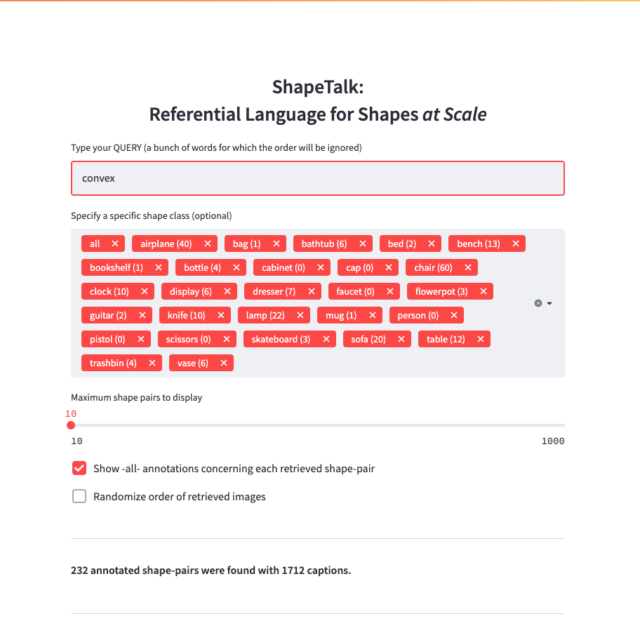

ChangeIt3D:
Language-Assisted
3D Shape Edits and Deformations
- Snap Inc.1
- KAIST2
- Stanford University3


News
- [Dec. 13, 2022] This webpage is still under construction! It has limited functionality.
Abstract
In this work, we address the task of Language-Assisted 3D Shape Edits and Deformations (which we name ChangeIt3D). Given a 3D representation of an object and free-form natural language describing desired changes or modifications to the shape of the object, the task is to transform the input object's geometry in a manner that reflects the requested changes -- for example, to modify a 3D chair model to make its legs thinner, or to open a hole in its back. To tackle this problem in a way that promotes open-ended language usage allowing fine-grained shape edits, we introduce the largest existing corpus of natural language describing shape differences, which we call ShapeTalk. This dataset contains over half a million discriminative utterances produced by contrasting the shapes of pairs of common 3D objects for a variety of object classes and degrees of similarity. We introduce metrics for the quantitative evaluation of language-assisted shape editing methods that reflect key desiderata within this editing setup. We also design an effective and modular framework for ChangeIt3D that can combine an arbitrary 3D generative model of shapes with our in-house, ShapeTalk-based, text-to-shape neural listener. Crucially, our modules are trained and deployed directly in a latent space of 3D shapes, bypassing the ambiguities of “lifting” 2D to 3D when using extant foundation models and thus opening a new avenue for 3D object-centric manipulation through language.
The ShapeTalk Dataset

Browse
You can browse the ShapeTalk annotations here.
License & Download
- The ShapeTalk dataset is released under the ShapeTalk Terms of Use, and our code is released under the MIT license.
- To download the ShapeTalk dataset please first fill out this form, accepting the Terms of Use.
We will send you an email with downloading instructions once this functionality is ready.
ChangeIt3D Architecture
Qualitative Results

Citations
If you find our work useful in your research, please consider citing:
@article{achlioptas2022changeIt3D,
title={{ChangeIt3D}: Language-Assisted 3D Shape Edits and Deformations},
author={Achlioptas, Panos and Huang, Ian and Sung, Minhyuk and Tulyakov, Sergey and Guibas, Leonidas},
journal={https://changeit3d.github.io/},
year={2022}}
Also, if you you use the ShapeTalk dataset, or the above paper's relevant experiments, please also consider citing our previous paper/data, ShapeGlot which was used to augment and build ShapeTalk:
@inproceedings{achlioptas2019shapeglot,
title={{ShapeGlot}: Learning Language for Shape Differentiation},
author={Achlioptas, Panos and Fan, Judy and Hawkins, Robert and Goodman, Noah and Guibas, Leonidas},
booktitle = {International Conference on Computer Vision (ICCV)},
year={2019}}
Acknowledgements
This work is funded by a Vannevar Bush Faculty Fellowship, an ARL grant W911NF-21-2-0104, and a gift from Snap corporation. Panos Achlioptas wish to thank for their advices and help the following researchers: Iro Armeni (data collection), Nikos Gkanatsios (neural-listening), Ahmed Abdelreheem (rendering), Yan Zheng and Ruojin Cai (SGF deployment), Antonia Saravanou and Mingyi Lu (relevant discussions) and Menglei Chai (CLIP-NeRF). Last but not least, the authors want to emphasize their gratitude to all the hard-working Amazon Mechanical Turkers without whom this work would be impossible.